An overview of Lunacy's basic features and capabilities
Learn more about Lunacy's features, interface capabilities, and useful tips and tricks to speed up your design process.
If your design is taking up too much space on the canvas, use the
mouse wheel to scroll vertically. To scroll horizontally,
additionally hold down Shift.
Another way to navigate the canvas is to hold down Space to activate
the Hand tool and drag the canvas to wherever you need.
You can always use the scroll bars on the right and bottom of the workspace, but it's not as convenient as the other options.
The easiest way to zoom in and out in Lunacy is by holding
down Ctrl / ⌘ and moving the mouse wheel. To zoom slower,
additionally hold down Shift.
When the zoom value exceeds 500, Lunacy displays a pixel grid. If you want to disable this feature:
Press
You can also set the canvas color opacity to 0 so it becomes transparent. You'll see a checkerboard pattern instead of a fill.
There are three tabs at the top of the right panel: Design, Export, and Code.
The Design tab is the one you'll interact with the most when working on your designs.
The set of controls and settings it displays depends on the type of the selected layer. These properties are universal for almost all layer types:
| Right Panel Properties | Description |
|---|---|
| 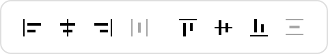 | Alignment and distribution controls appear when you select two or more layers. |
| 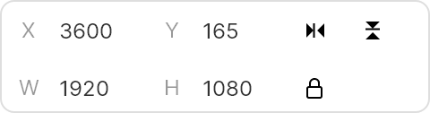 | Layer size and position. Change the size of your layers and their position on the canvas. Use the buttons next to the position controls to flip your images and toggle the lock button on and off to preserve aspect ratio when resizing. Controls vary depending on the selected layer. |
| 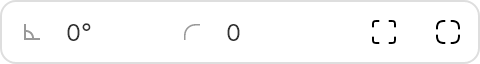 | Rotation and corner radius. Rotate your layers and change their corner radius properties. |
| 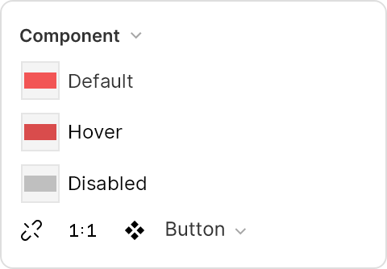 | Component options. Use this section to manage components. Create new component states, switch between them, and detach instances from main components. |
| 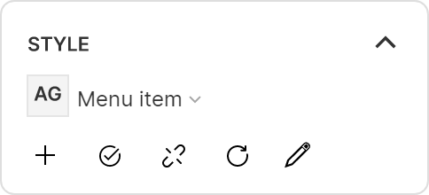 | The Style section Displays the styles applied to your layer (text styles, color styles, effect styles, etc.) You can add styles from UI kits, create your own, and detach layers from applied styles. |
| 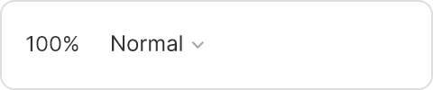 | Opacity and blend mode settings. Set the overall opacity of a layer and its blending mode. |
| 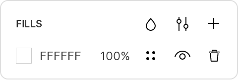 | Fills. Change the color of your layer. |
| 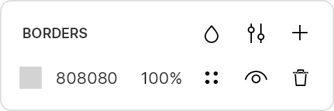 | Borders. Add borders to your layers. |
| 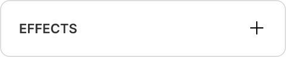 | Effects. Add effects (shadows, blurs) to your layers. |
| 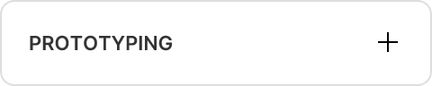 | Prototyping. Activate prototyping options and turn your static designs into interactive prototypes. Here's how it works. |
| 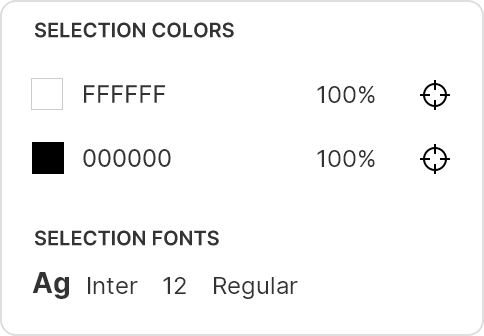 | Selection properties. Shows the colors and fonts used in selected layers. |
Click on the Export tab to open up export settings for your entire project or click individual/multiple layers to export just them. Read in detail about export settings.
You can also use the Linked Design option to include embed links to Lunacy layers directly into website code: when you update them in Lunacy, they'll be automatically updated on your website. Learn more about linked design in this section.
The Code tab displays the code corresponding to your layers.
When all layers are deselected, the right panel shows these settings:
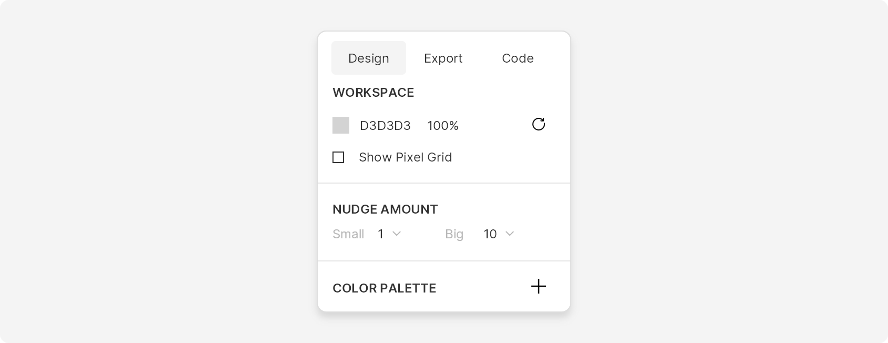Shift).
If you need more space, you can hide the right panel panel by selecting View → Right Panel on the menu bar.
To change values in the right panel input fields:
Rulers and guides help to position and align layers.
Rulers are enabled by default and use pixels as a measurement unit. They appear at the top and on the left side of the canvas.
To toggle rulers on and off, use the Ctrl + R / ⌘ + R shortcut or select View → Rulers on the menu bar.
To create a guide, click anywhere on a ruler and drag the guide onto the canvas. You can now position layers along the guide. Moving a layer close to it snaps the layer to the guide.
To move a guide, drag it to another position or select it and use arrow keys
to nudge it. To remove a guide, click it (hold down Shift to select multiple guides)
and press Delete.
You can also open up all of these guide settings by right-clicking over a ruler:
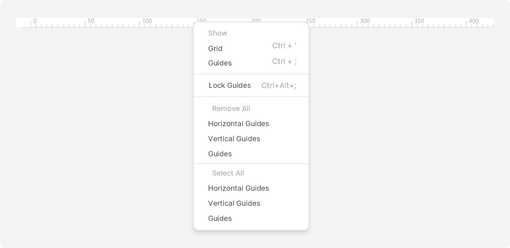Lunacy has square and layout grids. If needed, you can display both of them at the same time.
If there are no frames on the canvas, Lunacy displays a square grid.
Toggle it on and off by clicking the Show/Hide grid button on the
right panel or pressing Ctrl + ' / ⌘ + '.
If you have frames on the canvas, use the same button to toggle grids on and off:
To set the size of grid cells, enter the desired value in the Grid size field.
Layout grids are useful for positioning design elements within your frame. If you have several frames on a page, you can toggle layout grids on and off for them just like with sqaure grids, using the corresponding button in the right panel.
Each frame can have its own layout grid settings:
Lunacy has a variety of options for measuring distances between elements. The measurement option depends on whether a layer is distinct, grouped with other layers, or nested in a frame.
To measure the distance between two layers:
Alt / ⌥.To measure the distance from a layer within a frame to the frame's boundaries:
Alt / ⌥.Alt / ⌥.You can also use this function to position layers in a precise location or relative to one another:
Alt / ⌥ and move the selected layer using the arrow keys.Use the steps described above to measure the distances between:
To measure the distance between a layer inside a group and the group's boundaries:
Ctrl + Alt / ⌘ + ⌥.To measure the distance between a layer inside a group and the borders of the frame where it's nested:
Alt / ⌥.To measure the distance between two layers in different groups:
Alt + Shift / ⌥ + Shift.Here's a handy shortcut list for all of the distance measurement options:
| Element Types | Measurement Option |
|---|---|
| Two separate layers | Select the first layer, hold down Alt / ⌥, and hover the cursor over the other layer. |
| A layer inside a frame → the frame's boundaries |
|
| A grouped layer → individual layer | Select the grouped layer, hold down Alt / ⌥, and hover the cursor over the other layer. |
| Two layers inside the same group | Select the first layer in the group, hold down Alt / ⌥, and hover the cursor over the other layer in the group. |
| A grouped layer → frame boundaries | Select the first layer in the group, hold downAlt / ⌥, and hover the cursor over an empty area within the frame. |
| A layer inside a group → the group's boundaries | Point the cursor over a grouped layer and hold down Ctrl + Alt / ⌘ + ⌥. |
| A layer inside a group → the boundaries of the frame where it's nested | Select a grouped layer, hold down Alt / ⌥, and hover the cursor anywhere outside the other grouped layers. |
| Two layers in different groups | Select a grouped layer, hold down Alt / ⌥, hover the cursor over a layer in another group. |
Use the Zoom tool and the Zoom control to explore more of Lunacy's zooming options.
The Zoom tool enables you to zoom in to a selected layer or canvas area. To use the tool:
Z.Alt + Z / ⌥ + Z and click or drag over the layer/area.The zoom control is on the right of the document tabs. To change the zoom value, you can:
You can also alter zoom options using preset values:
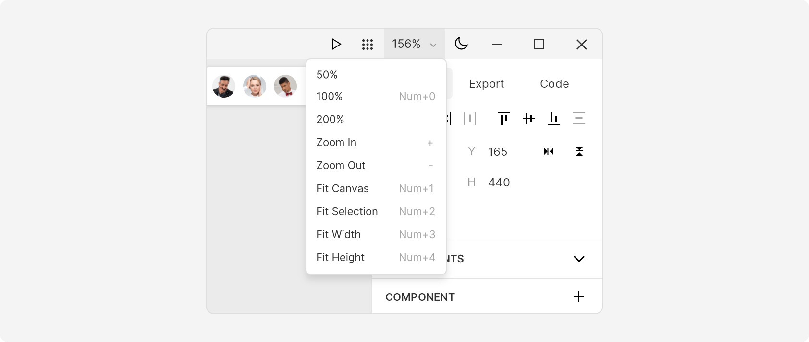Here are all the essential zoom options and corresponding shortcuts:
| Operation | Description | Windows Shortcut | Mac Shortcut |
|---|---|---|---|
| Zoom in/out | Zooms the canvas in/out. | +/- / Ctrl + "+/-" |
⌘ + "+/-" |
| Zoom to 100% | Sets the zoom value to 100%. | Ctrl + 0 |
⌘ + 0 |
| Zoom to All Layers | Shows all the layers on the page. | Ctrl + 1 |
⌘ + 1 |
| Zoom to Selection | Zooms in and displays the selected layer in the center of the screen. | Ctrl + 2 |
⌘ + 2 |
| Zoom to fit width | Zooms the canvas so that all horizontally distributed layers fit the screen. | Ctrl + 3 |
⌘ + 3 |
| Zoom to fit height | Zooms the canvas so that all vertically distributed layers fit the screen. | Ctrl + 4 |
⌘ + 4 |
These options are also accessible through the View section on the menu bar:
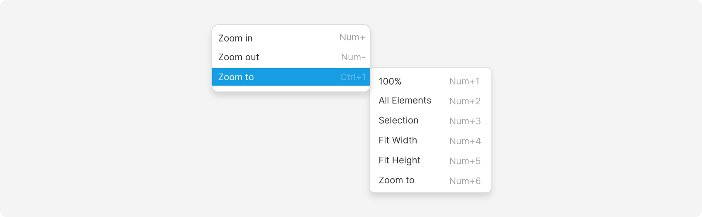By default, Lunacy displays the canvas in the vector mode, which means that all layers (except for rasterized ones) will preserve their quality regardless of the zoom value. If you need to see individual pixels, you can use the Show pixels on zoom button. It displays pixels when the zoom value exceeds 100.
Here is the same layer with the feature disabled (left) and enabled (right):
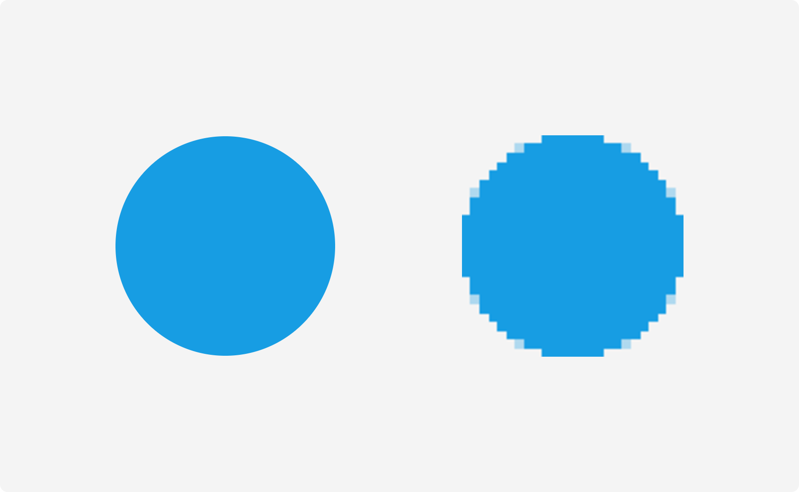You can also toggle this feature on and off in the menu bar by selecting View → Pixels on Zoom.
The context menu is a pop-up list of commands and options for basic operations with layers.
It appears when you right-click on a layer. The items on the menu vary depending on the layer you select.
Almost all context menu options have shortcuts you can use to speed up your workflow:
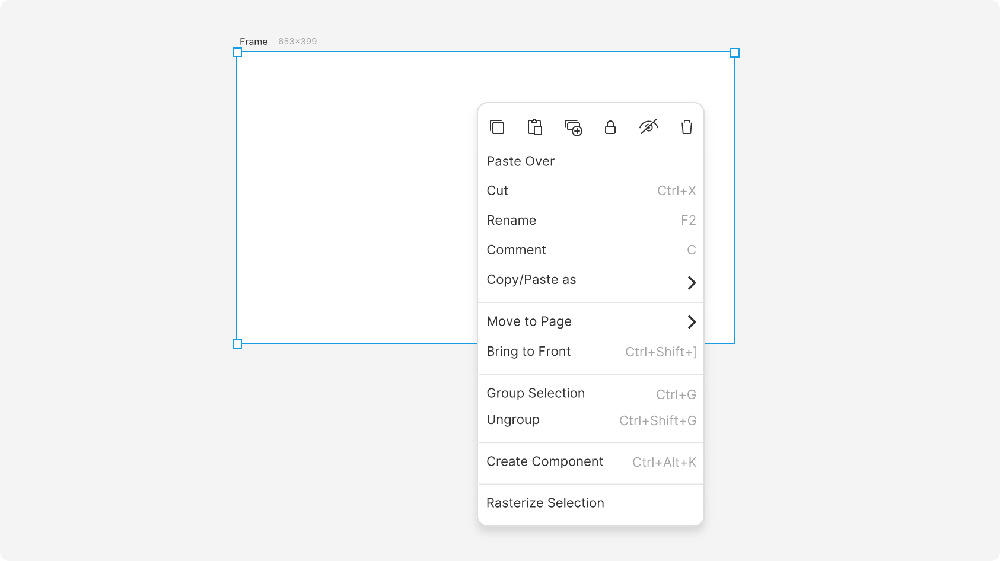These context menu options are universal for almost all layer types:
| Context Menu Button | Description |
|---|---|
| Copy the layer. | |
| Paste an element at the position of the cursor. | |
| Duplicate the selected layer. | |
| Protect the layer from accidental edits. | |
| Hide the layer from the canvas. | |
| Deletes the selected layer. | |
| Paste Over | Paste an element over the layer. |
| Cut | Cut the selected layer. |
| Rename | Rename the layer. |
| Comment | Comment on the layer. |
| Copy/Paste as | Opens a submenu with copy/paste options. |
| Move to page | Move the layer to another page in the document. |
| Send to Back | Move the layer to the bottom of the Layer list. |
| Bring Forward | Move a layer one step higher in the Layer list. |
| Group Selection | Group two or more selected layers together. |
| Ungroup | Ungroup a selected group of layers. |
| Create Component | Create a reusable component from the layer. |
Turn off some or all of these features for a completely private experience:
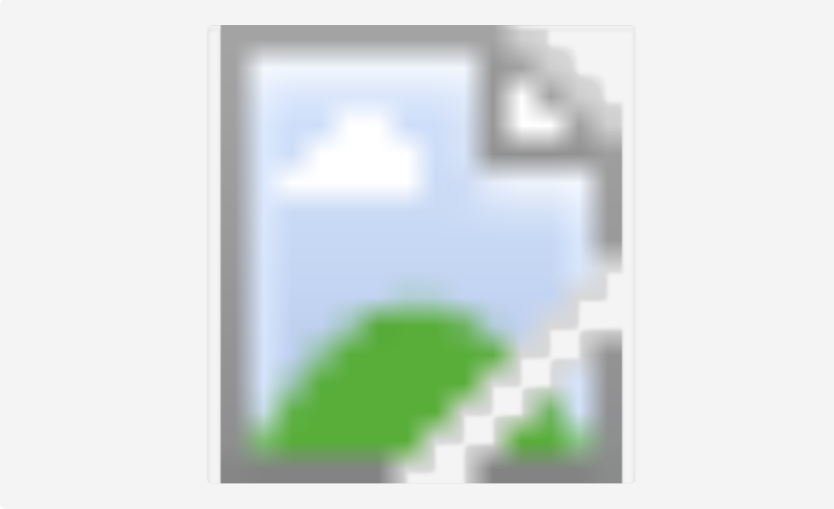All users can disable Google Analytics and Google Fonts, and you can disable the rest of the features with a subscription.